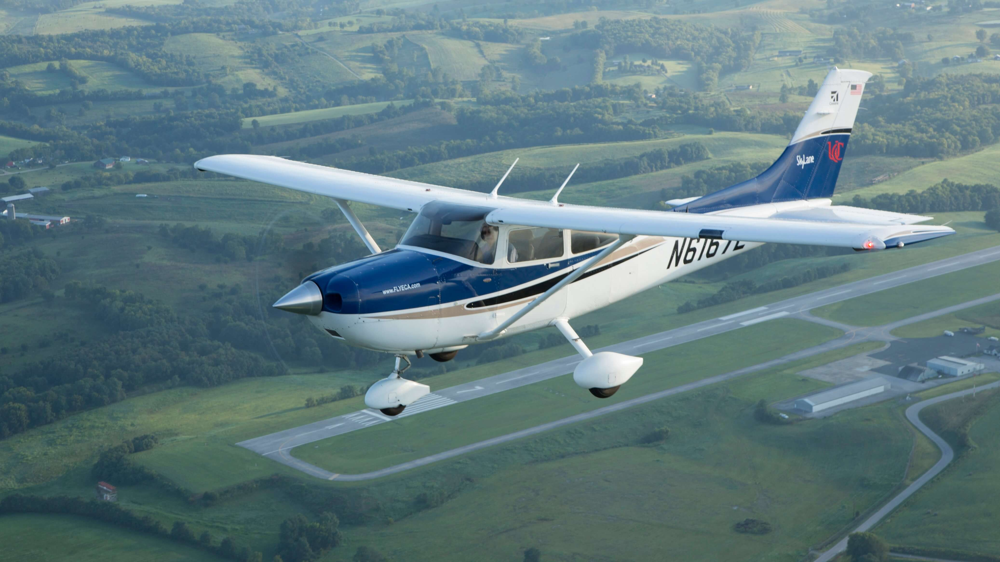
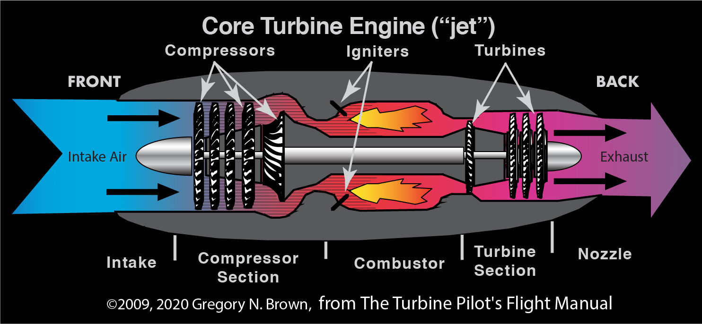
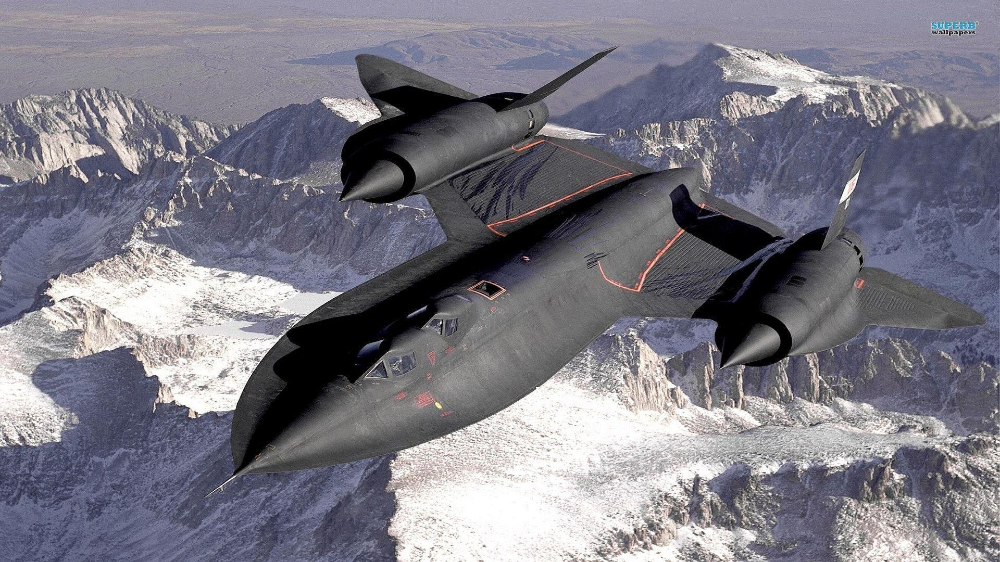
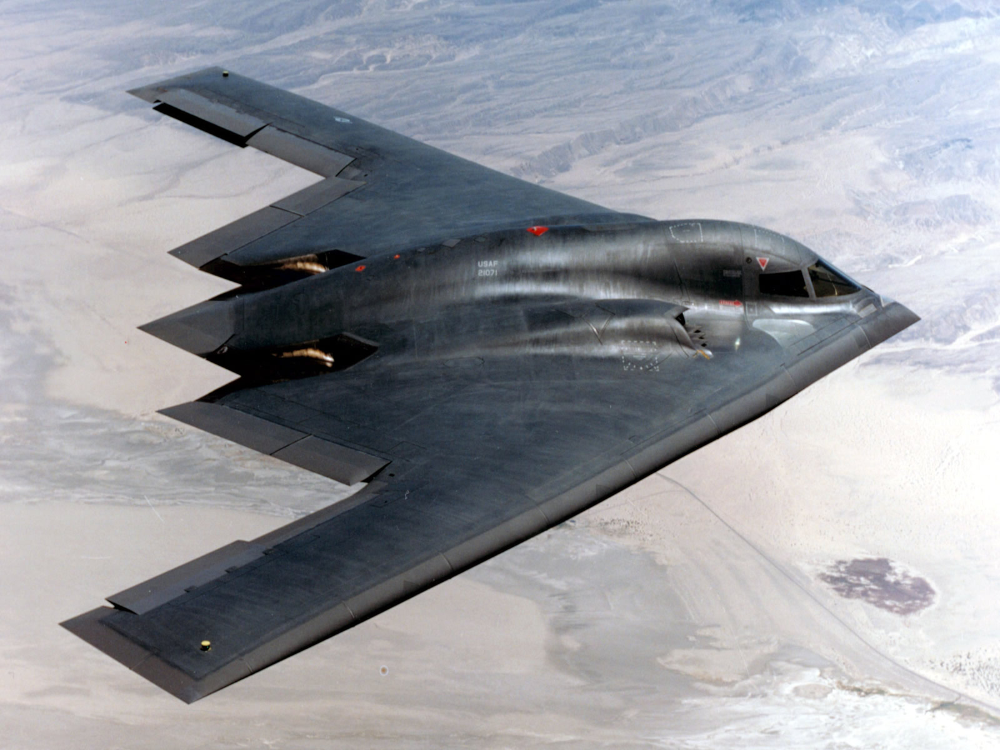
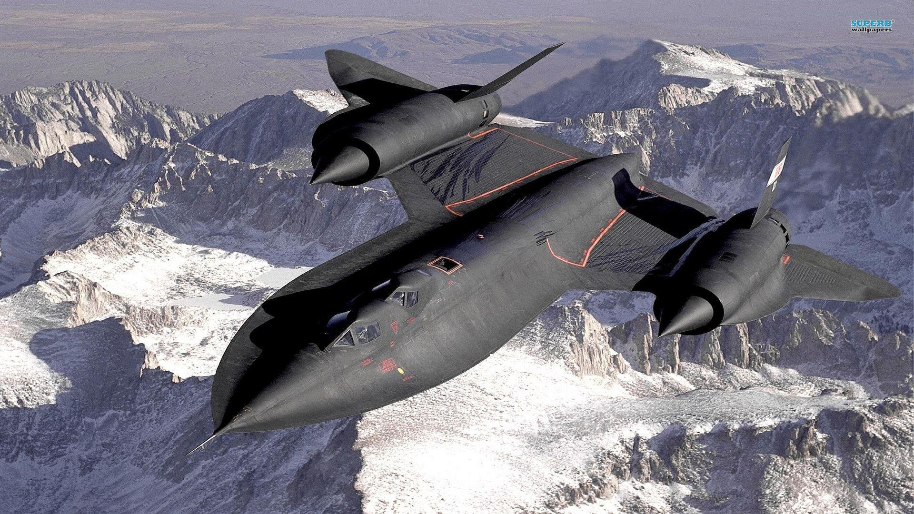
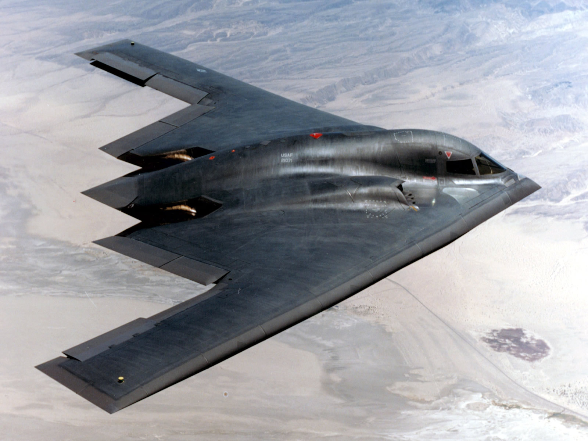

Airplanes
Airplanes
Airplanes are the thrird most complcated thing in the world the first is the human body and then the rocket.
Airplanes are usually long and heavy some airplanes are small.
The Airplanes are the top one best vehicle of transport. Why, because it is safer, faster but they also pollute the most, so you shoulden't use the airplanes that much try using trains they use electricity.
Airplane wing and how it works
Airplanes are big so how do they fly ? It is actually simple, the Airplane wing isn't flat it is a bit curved and when the air splits in half the air on top flows faster while the air on the lower part of the wing flows slower and that creates lift thats how the wings of an airplane work.
Airplane Engine
And now of course let's not forget about the engines of an airplane. How does the engine work? Simple, when the pilot starts the engine the big fan starts turning really fast and that absorbs air then after that the air is compressed and mixed with kerosin(Gas for airplanes) then the mixture is burned and then the explosion is creating the thrust and then the turbine is turned and the turbine spins the fan and then it starts all over again.
Click here to read about airplane engines on Wikipedia.
Airplane parts and their functions
- Horizontal Stabillizer : Contro Pitch
- Vertical Stabillizer : Control Yaw
- Rudder Change Yaw
- Elevator : Change Pitch
- Winglet : Decrease Drag
- Wing : Generates Lift
- Flaps : Increase Lift and Drag
- Aileron : Change Roll
- Spoiler : Change Lift, Drag and Roll
- Slats : Increase Lift
- Fuselage : Hold Things Toghether-Carry Payload
- Cockpit : Command and Control
- Turbine Engine : Generates Thrust
The use of Airplanes
There are different tipes of airplanes: some are really fast, some are really big and some can hide from the radar. Airplanes aren't only used for passengers but also for others.
 



This was the end of the Airplanes webpage. And to find out Airplane history go on Airplane History.